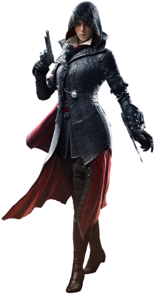
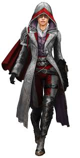

The section tag defines sections in a document, such as chapters, headers, footers, or any other sections of the document.
Evie Frye
Evie was born four minutes before her brother Jacob. Due to their mother Cecily's death after childbirth, the twins were raised by their grandmother in Crawley until the age of six, after which they were trained by their father, Ethan Frye, in the ways of the Assassins. Evie relished in her father's lessons and gravitated in planning and research on the Brotherhood, and the Pieces of Eden, unlike the carefree Jacob.
In her teenage years, Evie used her skills to spy upon Ethan and his father's friend George Westhouse's conversations about the Brotherhood and would relay this information to her brother.
Early in her career as an Assassin, Evie assassinated her first target, an abusive mill owner who refused to provide adequate wages to his workers. The mill owner was eventually replaced by an Assassin.
After their father's death in 1868, the twins coordinated with George Westhouse in Croydon, to remove the Templar threat of Rupert Ferris and David Brewster. Having her research and plans for her attack on a Starrick and Co. train yard, Evie deployed a diversion by detaching the train's carriages to infiltrate Brewster's laboratory and recover a Piece of Eden from him and the Templar occultist Lucy Thorne.